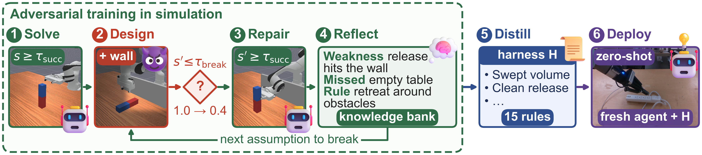
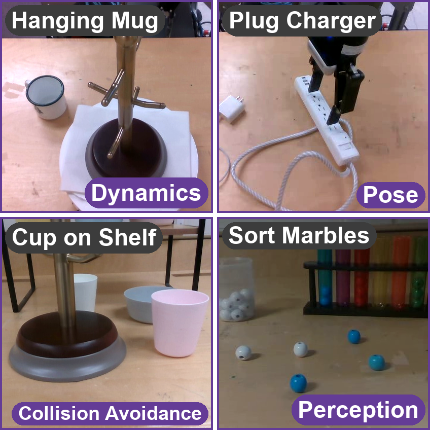

Coding agents write robot programs that work on the scene in front of them and break when the scene changes. In A2H, one agent solves a simulated task, then designs scene changes that break its own program, repairs it, and writes down why it missed the weakness. The lessons from tasks in five simulation benchmarks become one short Markdown harness that a fresh agent reads before writing a program for an unseen task on a real robot.
Method

Training in simulation
A variation is accepted only if a gate tool, running a frozen copy of the pre-round program, sees success fall to at most half of s₀, the change is not a third parameter tweak in a row, and the evaluator is untouched. The agent then repairs the program until it reaches τ = 0.8 on the base task and on every earlier constraint, since each constraint may or may not appear at test time. Every round ends with a reflection whose general rule names no task or object.
Deployment on the real robot
A fresh agent gets the task goal, the robot API and the harness. It may observe the scene with read-only perception calls; the robot moves only when the operator runs a submitted program. Each run is one attempt, at most four. We report pass@1 (the first time the robot moves, it succeeds) and pass@4, against the same agent without the harness.
Full training and deployment protocol
Setting
A coding agent receives a task e with a language goal and a scene. It writes a pipeline p, a single script or a set of skills driven by a state machine. s(p, e) is the success rate of p on e over 10 seeds. A variation v changes one aspect of the scene; the designed task e ⊕ v keeps the goal and the success function of e. All training happens in simulation, where the agent can break its programs safely.
Shared robot API
The agent never reads simulator state. Every backend, simulated or real, exposes the same Python API:
perception (detect, get_obstacles, track, camera_frame),
motion (move_to with obstacles to avoid, grasp with a grip strength, place,
open_gripper, close_gripper, wait_until) and state checks (tcp_pose,
gripper_holding, in_region). Simulated detections carry 1 cm and 3° of noise, so a program cannot rely on exact
simulator state. Because the vocabulary is shared, a rule learned in one simulator names the same calls on the real robot.
Constraints that may or may not appear
Each accepted variation is one more constraint on the task. After k rounds the agent holds Ck = {v1, …, vk}, and the task it must solve is e ⊕ {vj ∈ Ck : bj = 1} with bj ~ Bernoulli(πj), where πj is the unknown chance that constraint vj is present. A good pipeline succeeds whether or not each constraint appears. In training we check the base task and every constraint on its own: s(p, e) ≥ τ and s(p, e ⊕ vj) ≥ τ for every vj.
Training loop (one run per task)
- Solve. Write p and evaluate it on 10 seeds until s(p, e) ≥ τ, with τ = 0.8. Record s0 = s(p, e).
- Question and design. List the assumptions the pipeline makes about the scene, pick the one a real robot is most likely to violate and that has not been attacked yet, and write a variation that violates it. Variations are scene edits from a fixed vocabulary: object pose, orientation and size, mass and friction, distractors, obstacles, object motion during execution, lighting, and camera pose. The scene must stay physically solvable.
- Gates. A gate tool, not the agent, decides. It runs a frozen copy of the pipeline from before the round.
- Break gate: the frozen pipeline must lose at least half its performance, s(p, e ⊕ v) ≤ s0/2.
- Variance gate: pure parameter tuning (for example, moving the same object further in the same direction) may break the pipeline at most two times in a row; the next variation must change a different aspect. The agent labels each variation and the tool checks the label against the previous one.
- Validity and integrity: scenes that are invalid at reset (objects falling or interpenetrating) are rejected, and a hash of the success function and the tools stops the agent from passing a gate by editing the evaluator.
- Recover. Repair the pipeline, at most 6 iterations, until it reaches τ on the new variation without dropping below τ on the base task or any earlier constraint. Otherwise the variation is marked unsolved, the pipeline is reverted, and the variation does not join C; it still produces a reflection.
- Reflect. One entry per round: the weakness, how it was found, why it was missed, the fix, and a one-sentence general rule that names no task or object, marked novel or not with respect to earlier entries.
- Converge. Return to step 2 with the repaired pipeline. Stop after five accepted variations or two consecutive accepted rounds whose rules are not novel.
p ← A(e); s0 ← s(p, e); C ← ∅; R ← ∅; n_tune ← 0
while |C| < 5 and the last two accepted rules are not both non-novel:
v ← A.DesignTask(p, e) # question the pipeline
if v is parameter tuning and n_tune ≥ 2: reject v # variance gate
if s(p, e ⊕ v) > s0 / 2: reject v # break gate, frozen p
n_tune ← n_tune + 1 if v is parameter tuning else 0
p' ← p
repeat p' ← A.Repair(p', e ⊕ v) # at most 6 times
until s(p', e) ≥ τ and s(p', e ⊕ v') ≥ τ for all v' in C ∪ {v}
if recovered: p ← p'; C ← C ∪ {v} # new constraint
R ← R ∪ A.Reflect(p, v) # also for unsolved v
return R
Summarizing the harness
After all runs, a fresh agent reads every reflection and writes the harness H, a Markdown file of at most 800 words. It keeps only lessons supported by at least one reflection, names no training task or object, merges duplicates and orders rules by how many failures they would have prevented. Each rule carries one line on the failure it prevents. H has four sections: questions to ask before writing code, constraints every program must satisfy, self-checks to run without a simulator, and a workflow. A hidden source map links every rule to its reflections. For a real task that also appears in training (hanging mug, plug charger), the harness is built leave-one-out from all other reflections. The harness used on the robot will be released upon acceptance.
Deployment protocol
A fresh agent gets an unseen real task with no simulator, no access to training tasks and no human supervisor. Before writing, it may inspect the scene with read-only perception calls, which never move the robot and do not count as attempts. The robot moves only when the operator runs a submitted program through a runner that enforces velocity, acceleration and workspace limits; each run is one attempt. After a failure the agent sees camera frames and the execution log, revises, and tries again, for at most four attempts, following the single- and multi-turn protocols of CaP-X with the number of turns capped. Every attempt records all camera videos, the robot state, every API call, tokens, time, failure type and safety events.
Breaking and repairing, on video
Highlights shows one run per simulator as a set of six: the same final program on the base task, then on each constraint it had to absorb, in the order they were added. Open a simulator to go task by task, where each round is a pair — the program frozen at the gate, then the program after the repair. Every clip is a single episode from the simulator, not a montage.
How to read these clips
- A gate passes when a variation breaks the program. Recovery is a separate step. Where a variation is marked unsolved, the repair never reached the threshold, so the right-hand clip is not a fix: it is the final program failing, or occasionally succeeding on a lucky seed.
- Some pairs run identical code. If no later variation was accepted, the frozen program is the final program, and the two clips differ only by simulator nondeterminism. Those are labelled same program.
- Seeds are searched, not sampled. The recorder tries up to three seeds until the outcome matches expectation, so a clip marked seed searched is the draw that matched, and the variation's measured success rate matters more than the single episode you are watching.
- Run-to-run variance is real. Re-running identical code and seeds, 2 of 21 episodes flipped outcome.
- Clips end when the program returns, about a second of simulated time before the success check settles, so an object may still be moving in the final frame.
Real-robot evaluation
A UR5e arm with a Robotiq 2F-140 gripper and three RealSense cameras. Four tasks, each testing one challenge. A fresh agent writes the program zero-shot; we compare no harness (Baseline), a harness from recursive self-improvement on the same training tasks (RSI Harness), and A2H. pass@1 is the success rate at the first attempt, pass@4 within four attempts; cost is the token cost in dollars.

| Task | Baseline | RSI Harness | A2H | ||||||
|---|---|---|---|---|---|---|---|---|---|
| pass@1 | pass@4 | Cost ($) | pass@1 | pass@4 | Cost ($) | pass@1 | pass@4 | Cost ($) | |
| Sort Marbles | 20% | 45% | 8.4 | 40% | 55% | 15.9 | 100% | 100% | 12.0 |
| Cup on Shelf | 0% | 35% | 14.5 | 20% | 50% | 20.2 | 60% | 100% | 19.1 |
| Plug Charger | 0% | 15% | 19.5 | 0% | 20% | 35.5 | 60% | 100% | 28.5 |
| Hanging Mug | 0% | 15% | 23.4 | 0% | 25% | 43.1 | 20% | 80% | 40.0 |
| Average | 5% | 27.5% | 16.5 | 15% | 37.5% | 28.7 | 60% | 95% | 24.9 |
Demo runs
Runs recorded on the real robot during evaluation. Each clip stacks the front, side and wrist cameras from top to bottom, at 4× speed.
Successes
Failures
What the agent broke in simulation
Every variation that passed the gates, across the training tasks in five simulators. Bars show success of the frozen program before (s₀), under the variation (s_break), and after repair.
Citation
@inproceedings{li2026a2h,
title = {Learning to Anticipate Physical Failures via Agentic Adversarial Harness},
author = {Li, Zhiyuan and Liu, Dingsheng and Rasouli, Amir},
booktitle = {Conference on Robot Learning (CoRL), Late-Breaking Results},
year = {2026}
}